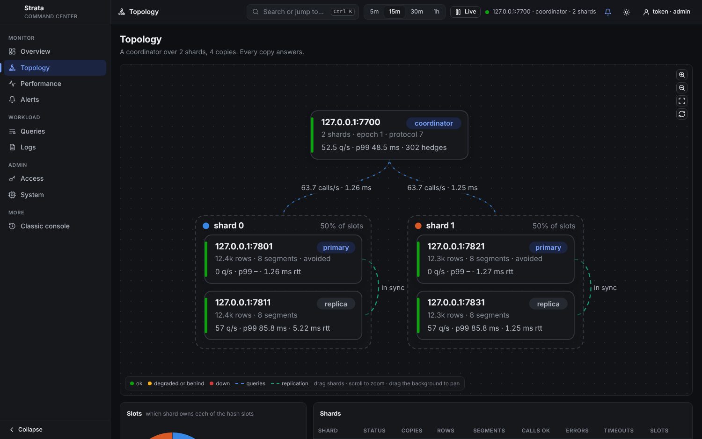
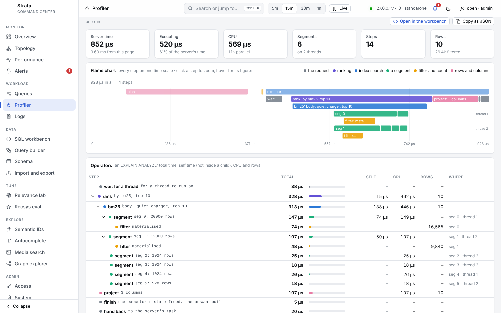
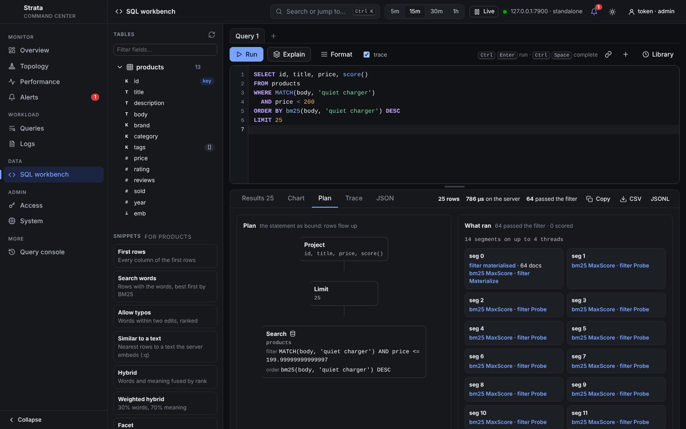
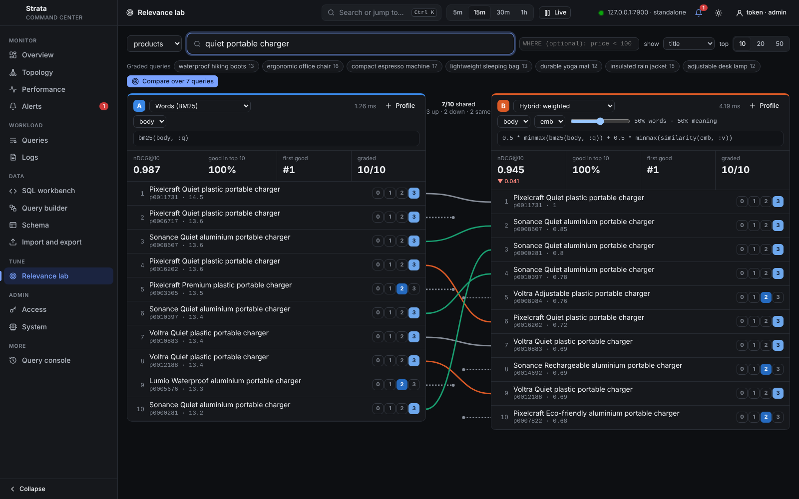

One engine for search, data and recommendations
Full text, vectors, columns and graphs over the same rows, in one SQL query. Run it as a file in your app or as a cluster in the cloud.
First overall against thirteen engines when every kind of query counts
Read the reportEverything a search application needs, in one place
Each row is stored once and indexed four ways. One statement can use all of them.
Full-text search
BM25, phrases, typos, synonyms and autocomplete.
Vector search
Filtered HNSW and IVF, hybrid fusion, multi-vector MaxSim.
SQL and columns
Joins, aggregates, JSON fields and ACID transactions.
Graphs
Paths, reachability and personalised PageRank inside a query.
Recommendations
Next-item models, bought-together walks and business rules.
Ranking
Rank expressions, LightGBM and XGBoost models, cross-encoders.
Four indexes, one statement
Other stacks join a database, a search engine, a vector store and a recommender in application code. In Strata it is one query, and the planner decides how to run each part.
- Full text finds "wireles controller" despite the typo
- Columns keep the price range and two items per brand
- Vectors add what is close in meaning
- Graph adds what this user's recent purchases lead to
SELECT id, title, price, score() FROM products
WHERE MATCH(title, 'wireles~ controller')
AND price BETWEEN 20 AND 60 AND in_stock = TRUE
ORDER BY rrf(
bm25(title, 'wireless controller'),
similarity(emb, :query_vector),
ppr(bought_with, (SELECT item FROM reviews
WHERE usr = :user ORDER BY ts DESC LIMIT 5)))
DESC MAX 2 PER brand LIMIT 10;Start with a file. Grow to a cluster. Keep your queries.
The same schema, the same SQL and the same file format at every step.
A file, like SQLite
Open it from Python, JavaScript, Java or Rust. No server to run.
db = strata.open("shop.strata")HTTP, gRPC and a console
Serve the same file, with API keys and replicas when you need them.
strata-server --db shop.strata
Shards on Kubernetes
An operator that scales, upgrades and fails over a sharded cluster.
kubectl apply -f operator.yaml -f cluster.yaml
Use it from the language you already use
Each one opens a local file or talks to a server, with the same methods.
Try a query
Every example runs against the same shop: products, reviews and users.
SELECT id, title, price, score() FROM products WHERE MATCH(title, 'controler~ OR gamepad', synonyms => 1) AND price BETWEEN 20 AND 60 AND in_stock ORDER BY bm25(title, 'controller gamepad') DESC LIMIT 10;
SELECT id, title, score() FROM products WHERE in_stock ORDER BY rrf(bm25(title, :q), similarity(emb, :v)) DESC LIMIT 10;
SELECT id, title, brand FROM products WHERE in_stock
ORDER BY similarity(emb, encode('next',
(SELECT item, ts FROM reviews WHERE usr = :u ORDER BY ts DESC LIMIT 200)))
DESC MAX 2 PER brand LIMIT 10;SELECT id, title, hops() FROM products WHERE REACHABLE(bought_with, 'B07XYZ', hops => 2, dir => 'both') AND in_stock ORDER BY hops(), rating DESC LIMIT 20;
SELECT p.brand, COUNT(*) AS reviews, AVG(r.stars) AS stars FROM reviews r JOIN products p ON r.item = p.id WHERE r.ts >= '2026-01-01' GROUP BY p.brand ORDER BY reviews DESC LIMIT 10;
A console in every server
Open the server's address to see the cluster, its queries and its changes, live. Nothing extra to install.





First overall when one system has to do it all
Fourteen kinds of query against thirteen search engines and databases, on the same machines, with the answers checked.
Faster hybrid search than SQLite, DuckDB or LanceDB on every BEIR collection tested.
Graph · arXiv citations1st of 5Against Neo4j, Memgraph, FalkorDB and ArangoDB over 16 tests.
Specialists still win some kinds, such as typo search and key lookups. Each report shows where.
What people build with it
One engine instead of four systems and the code that keeps them in step.
App search
Replace SQLite and a search engine with one file that ranks, filters and counts facets.
Recommendations
Similar items, a home feed and next items, with rules, in SQL.
Retrieval for agents
Hybrid retrieval with reranking for RAG, filtered by who may see what.
Images and sound
Media embedded on write, searched by text or by example.
Start with a file in your app
Build the Python package from the repository, open a file and query it. Rust and a C compiler are all it needs.
git clone https://github.com/chloetech-ai/strata
pip install ./strata/strata-py
python -c 'import strata; db = strata.open("shop.strata")'